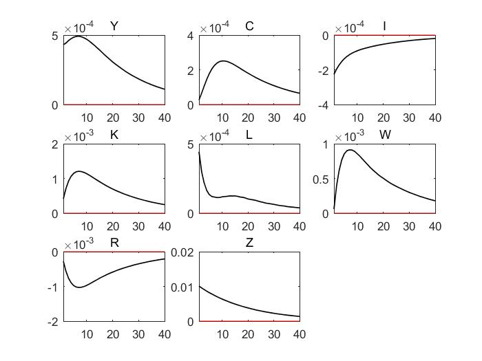

Aenean ornare velit lacus, ac varius enim lorem ullamcorper dolore aliquam.
动态随机一般均衡(DSGE)作为宏观经济学的一个重要分析框架(模型)，近年来相关的讨论也越来越多。本文基于李向阳老师的《动态随机一般均衡(DSGE)理论、方法、和Dynare实践》一书，结合任光宇老师教授的知识，对一个简单的模型做一个脉冲响应求解。
对于一个分散经济模型。其中包含两个部门：居民部门和企业部门。
居民面临的问题是最大化其一生的效用 \begin{equation*} \max_{C,K,L}E_0\sum_{t=0}^{\infty}\beta_t[\mu log(C_t-\phi C_{t-1})+(1-\mu) log(1 - L_t)] \end{equation*} 其中，C,L分别表示消费和劳动，$\beta,\phi,\mu$都是参数。
消费者受到的预算约束为 \begin{equation*} C_t + S_t =W_t L_t + R_t K_t \end{equation*} W和R分别是劳动L和资本K的要素价格，S是储蓄。资本存量的运动方程是 \begin{equation*} K_{t+1} = (1 - \delta) K_t + Z_t\cdot I_t \end{equation*} $\delta$是折旧率，I是投资，Z是投资转为资本的换算率。假设$logZ_t=(1-\rho_Z)log\bar{Z}+\rho_ZlogZ_{t-1}+\epsilon_t^Z$，$\epsilon_t^Z\sim N(0,\sigma_Z^2)$，$\bar{Z}$是序列$\{Z_t\}$的稳态。假设总投资等于总储蓄：$I_t = S_t$。
企业在给定要素价格下，租用资本、雇佣劳动力，目标是达到利润最大化。设TFP为A(稳态为$\bar{A}$)，生产函数如下 \begin{equation*} \begin{aligned} Y_t &= A_t K_t^{\alpha} L_t^{1-\alpha}\\ log A_t &= (1 - \rho_A) log \bar{A} + \rho_A log A_{t-1} + \epsilon^A_t\\ \epsilon^A_t &{}\sim N(0, \sigma_A^2) \end{aligned} \end{equation*} 简便起见，假设A和Z没有相关性。
参数校准情况如下表
| 参数 | $\alpha$ | $\beta$ | $\mu$ | $\phi$ | $\delta$ | $\rho_A$ | $\sigma_A$ | $\rho_Z$ | $\sigma_Z$ |
|---|---|---|---|---|---|---|---|---|---|
| 数值 | 0.35 | 0.97 | 0.4 | 0.8 | 0.06 | 0.95 | 0.01 | 0.95 | 0.01 |
首先居民部分面临的问题可以表示为
\begin{equation} \max U(C_t,K_t+1,L_t)=\max_{C,K,L}E_0\sum_{t=0}^{\infty}\beta^t[\mu log(C_t-\phi C_{t-1})+(1-\mu) log(1 - L_t)] \end{equation} \begin{equation} s.t. \left\{\begin{array}{c} C_t + S_t =W_t L_t + R_t K_t\\ K_{t+1} = (1 - \delta) K_t + Z_t\cdot I_t\\ I_t = S_t \end{array}\right. \end{equation}
建立拉格朗日方程为
\begin{equation} \mathscr{L}=\sum_{t=0}^{\infty}\beta^t\{[\mu log(C_t-\phi C_{t-1})+(1-\mu) log(1 - L_t)]+\lambda_t[K_{t+1}-(1-\delta)K_t-Z_t(W_t L_t + R_t K_t-C_t)]\} \end{equation}
将拉格朗日函数$\mathscr{L}$分别对$C_t,L_t,K_{t+1}$以及$\lambda_t$求导可得
\begin{equation} \frac{\partial \mathscr{L}}{\partial C_t}= \beta^t[\frac{\mu}{C_t-\phi C_{t-1}}+\lambda_tZ_t]+\beta^{t+1}\frac{-\mu\phi}{C_{t+1}-\phi C_t}=0 \end{equation} \begin{equation} \frac{\partial \mathscr{L}}{\partial L_t}=-\beta^t[\frac{1-\mu}{1-L_t}+\lambda_tZ_tW_t]=0 \end{equation} \begin{equation} \frac{\partial \mathscr{L}}{\partial K_{t+1}}=\beta^t\lambda_t+\beta^{t+1}\lambda_{t+1}[-(1-\delta)-Z_{t+1}R_{t+1}]=0 \end{equation} \begin{equation} \frac{\partial\mathscr{L}}{\partial\lambda_t}=K_{t+1}-(1-\delta)K_t-Z_t(W_t L_t + R_t K_t-C_t)=0 \end{equation}
消去$\lambda$，整理可得
\begin{equation}\tag{1} \frac{1}{\mu W_t}\frac{1-\mu}{1-L_t}=\frac{1}{C_t-\phi C_{t-1}}-\frac{\beta\phi}{C_{t+1}-\phi C_t} \end{equation} \begin{equation}\tag{2} \frac{Z_{t+1}}{\beta Z_t}\frac{1-L_{t+1}}{1-L_t}\frac{W_{t+1}}{W_t}=(1-\delta)+Z_{t+1}R_{t+1} \end{equation} \begin{equation}\tag{3} K_{t+1}-(1-\delta)K_t-Z_t(W_t L_t + R_t K_t-C_t)=0 \end{equation}
化简后的一阶条件中，式(1)为欧拉方程，式(2)为劳动供给方程，式(3)为资源约束方程。
接着我们来解决企业面临的利润最大化问题
\begin{equation} \max \pi(K_t,L_t)=\max_{K,L}A_tK_t^{\alpha}L_t^{1-\alpha}-(W_tL_t+R_tK_t) \end{equation}
将利润对资本投入和劳动投入求偏导可得一阶条件为
\begin{equation}\tag{4} \frac{\partial \pi}{\partial K_t} = \alpha A_tK_t^{\alpha-1}L_{t}^{1-\alpha}-W_tL_t-R_t=0 \end{equation} \begin{equation}\tag{5} \frac{\partial \pi}{\partial L_t} = (1-\alpha)A_tK_t^{\alpha}L_t^{-\alpha}-W_t-R_tK_t=0 \end{equation}
企业部门一阶条件中，式(4)可称为资本投入方程，式(5)可称为劳动投入方程
利用dynare进行外生冲击的模拟之前需要给定各个变量的初值，初值不能偏离稳态太远，以防模拟过程中出现无法收敛等问题。
此处，我们采用matlab来求解一下稳态值，为dynare模拟选择一个较佳的初值。
回顾一下，我们的模型中总共需要关注的变量为 Y C I K L W R A Z 九个内生变量(S与I相同故仅考虑一个即可)，以及两个外生变量$\epsilon^A$和$\epsilon^Z$。所涉及的方程组方程的个数应该为9个，方程组如下
\begin{equation} \frac{1}{\mu W_t}\frac{1-\mu}{1-L_t}=\frac{1}{C_t-\phi C_{t-1}}-\frac{\beta\phi}{C_{t+1}-\phi C_t} \end{equation} \begin{equation} \frac{Z_{t+1}}{\beta Z_t}\frac{1-L_{t+1}}{1-L_t}\frac{W_{t+1}}{W_t}=(1-\delta)+Z_{t+1}R_{t+1} \end{equation} \begin{equation} K_{t+1}-(1-\delta)K_t-Z_t(W_t L_t + R_t K_t-C_t)=0 \end{equation} \begin{equation} \alpha A_tK_t^{\alpha-1}L_{t}^{1-\alpha}-W_tL_t-R_t=0 \end{equation} \begin{equation} (1-\alpha)A_tK_t^{\alpha}L_t^{-\alpha}-W_t-R_tK_t=0 \end{equation} \begin{equation} Y_t = A_t K_t^{\alpha} \end{equation} \begin{equation} K_{t+1} = (1 - \delta) K_t + Z_t\cdot I_t \end{equation} \begin{equation} logZ_t=(1-\rho_Z)log\bar{Z}+\rho_ZlogZ_{t-1}+\epsilon_t^Z \quad \epsilon_t^Z\sim N(0,\sigma_Z^2) \end{equation} \begin{equation} log A_t = (1 - \rho_A) log \bar{A} + \rho_A log A_{t-1} + \epsilon^A_t \quad \epsilon^A_t \sim N(0, \sigma_A^2) \end{equation}
在求解稳态值的时候，可以将所有的t下标忽视掉，原因在于稳态情况下，变量值将不随t的改变而改变。
稳态值求解的matlab代码如下
%稳态值的求解
fun = @root2d; %需要求解的方程组
x0 = ones(9,1)*0.5; %给定迭代的初值
x_bar = fsolve(fun,x0) %求解方程组得出各个变量的稳态值
其中所用到的方程组编辑为函数如下
function F = root2d(x)
%此函数用于求解各个变量的稳态值
%参数赋值
alpha = 0.35; beta = 0.97; mu = 0.4; phi = 0.8; delta = 0.06;
%要求解的稳态值
Y = x(1); C = x(2); I = x(3); K = x(4); L = x(5);
W = x(6); R = x(7); A = x(8); Z = x(9);
%求解稳态的方程组
F(1) = (1-mu)/(mu*W*(1-L))-1/(C-phi*C)+beta*phi/(C-phi*C); %均衡条件Euler方程
F(2) = (Z*(1-L)*W)/(beta*Z*(1-L)*W)-(1-delta)-Z*R; %劳动供给方程
F(3) = K-(1-delta)*K-Z*(W*L+R*K-C); %资源约束方程
F(4) = alpha*A*(K^(alpha-1))*(L^(1-alpha))-W*L-R; %资本投入方程
F(5) = (1-alpha)*A*(K^(alpha))*(L^(-alpha))-W-R*K; %劳动投入方程
F(6) = Y - A*K^(alpha)*L^(1-alpha); %生产函数
F(7) = I - (K-(1-delta)*K)/Z; %资本存量运动方程
F(8) = A-1; %已知均衡值
F(9) = Z-1; %已知均衡值
end
最终x变量中的值即为稳态情况下各个变量的值。
利用dynare进行模拟的mod代码如下，注意此处的代码内容需要编辑为mod文件，利用dynare进行编译运行。
var Y C I K L W R A Z; //内生变量声明
varexo e_A e_Z; //外生变量声明
parameters alpha beta mu phi delta rho_A sigma_A rho_Z sigma_Z A_bar Z_bar; //参数的声明
//参数的赋值
alpha = 0.35; beta = 0.97; mu = 0.4; phi = 0.8; delta = 0.06;
rho_A = 0.95; sigma_A = 0.01; rho_Z = 0.95; sigma_Z = 0.01;
A_bar = 1; Z_bar = 1;
model; //模型部分
//欧拉方程
(1-mu)/(mu*W*(1-L))-1/(C-phi*C(-1))+beta*phi/(C(+1)-phi*C);
//劳动供给方程
(Z(+1)*(1-L(+1))*W(+1))/(beta*Z*(1-L)*W)-(1-delta)-Z(+1)*R(+1);
//资源约束方程
K-(1-delta)*K(-1)-Z*(W*L+R*K(-1)-C);
//劳动投入方程
alpha*A*(K^(alpha-1))*(L^(1-alpha))-W*L-R;
//资本投入方程
(1-alpha)*A*(K^(alpha))*(L^(-alpha))-W-R*K;
//生产函数
Y = A*K^(alpha)*L^(1-alpha);
//资本积累方程
I = (K-(1-delta)*K)/Z;
//技术冲击
log(A) = (1-rho_A)*log(A_bar)+rho_A*log(A(-1))+e_A;
//资本转化率冲击
log(Z) = (1-rho_Z)*log(Z_bar)+rho_Z*log(Z(-1))+e_Z;
end;
initval; //设定内生变量和外生变量的初值，以此为起点计算稳态值
C=0.26; L=0.41; W=0.61; R=0.09;
K=0.42; Y=0.41; I=0.02; A=1; Z=1;
e_A=0; e_Z=0;
end;
shocks; //外生冲击设定，设定外生冲击方差
var e_A; stderr sigma_A;
var e_Z; stderr sigma_Z;
end;
steady; //稳态计算
stoch_simul; //随机模拟

Aenean ornare velit lacus, ac varius enim lorem ullamcorper dolore aliquam.

Aenean ornare velit lacus, ac varius enim lorem ullamcorper dolore aliquam.

Aenean ornare velit lacus, ac varius enim lorem ullamcorper dolore aliquam.
该网站仅做为个人博客，分享知识，不用于任何商业用途。如有任何感兴趣的话题或想法欢迎前来投稿，若有发现网页内容存在侵权问题请联系作者及时删除。